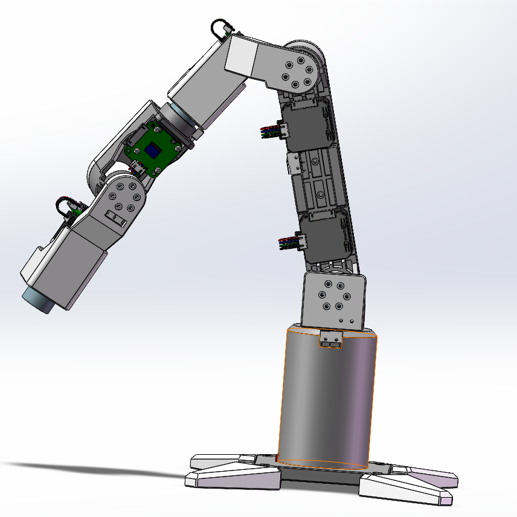
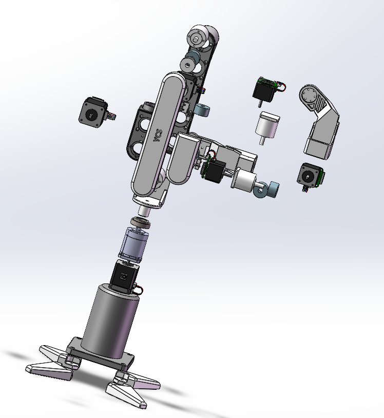
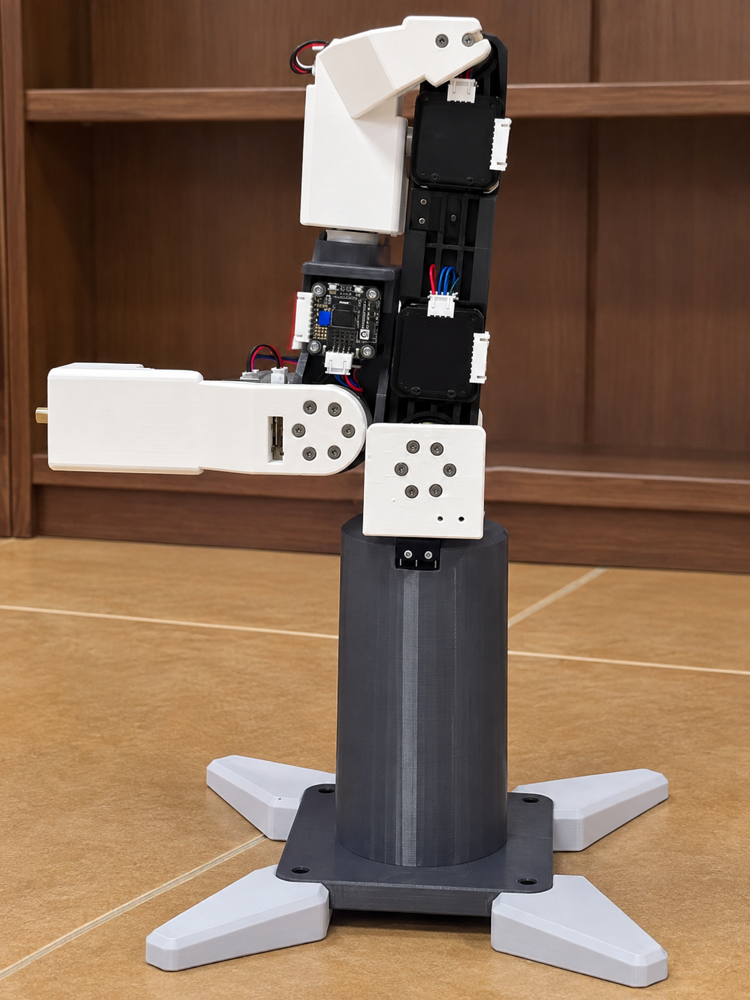
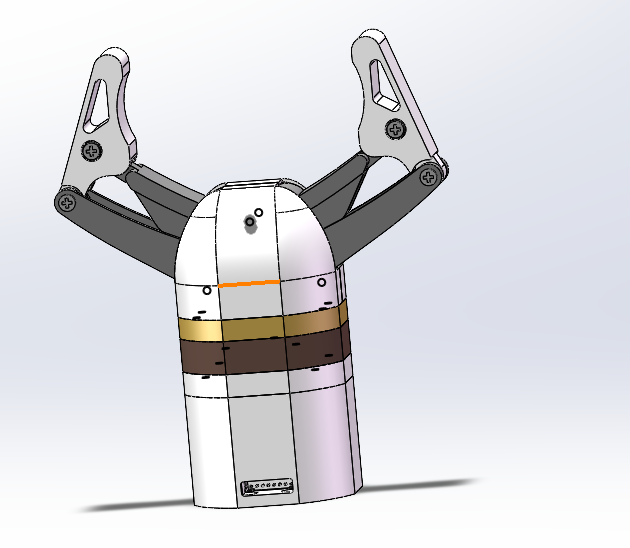
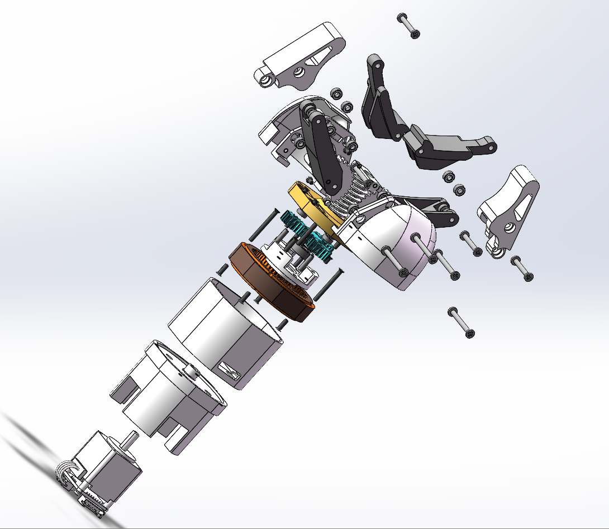

从结构设计、传动选型到控制实现的完整机电一体化项目。末端负载 1kg，全 3D 打印结构，七轴联动控制。
面向桌面级轻量操作场景的六自由度串联机械臂，配套自研电动平行夹爪，整机采用 3D 打印结构件，基于 STM32 实现七轴统一控制。
J1-J3 采用 42 步进电机配行星减速器，J4-J6 采用 35 步进电机配 27:1 减速器，按负载需求分级配置，兼顾扭矩与轻量化。
28 闭环步进驱动，行星(4:1)+非自锁蜗轮蜗杆(14:1)两级减速，总速比 56:1，平行四连杆输出，支持电流力控。
STM32 细分驱动 + 加减速规划 + 六轴联动，夹爪纳入第七轴统一控制，全关节限位回零，操作安全可靠。



六关节差异化选型，同步带后移减重，弹性联轴器补偿误差——每一处结构决策都有明确的工程依据。
| 关节 | 电机 | 减速器 | 速比 | 输出扭矩 | 设计考量 |
|---|---|---|---|---|---|
| J1 基座 | 42 步进 | 行星减速器 | — | — | 承载整机旋转 |
| J2 大臂 | 42 步进 | 行星减速器 | 51:1 | 16 N·m | 最大受力关节，高扭矩输出 |
| J3 小臂 | 42 步进 | 行星减速器 | — | — | 同步带后移电机减重 |
| J4 腕部1 | 35 步进 | 行星减速器 | 27:1 | — | 同步带后移电机减重 |
| J5 腕部2 | 35 步进 | 行星减速器 | 27:1 | — | 末端姿态调整 |
| J6 腕部3 | 35 步进 | 行星减速器 | 27:1 | — | 末端法兰旋转 |
将 J3、J4 关节的驱动电机通过同步带传动后移至靠近基座侧，有效减小小臂和腕部的运动惯量，降低前端重量，提升动态响应与负载能力。
电机输出轴与减速器输入轴之间采用弹性联轴器连接，补偿同轴度误差与轴向窜动，降低装配难度，减少传动振动与噪声。
各关节采用独立模块化结构，电机、减速器、编码器集成于关节壳体内，便于维护更换与后续迭代升级。
行星 + 蜗轮蜗杆两级减速，行星架蜗杆一体加工，平行四连杆输出，支持电流环力控——从传动链到机构的完整自研设计。


导程角 8.75° 大于摩擦角，蜗杆不具备自锁性。这一设计使夹爪在断电或故障时可手动推开手指，避免卡死；同时配合电流环实现柔性夹持，保护被抓取物体。
将行星减速器输出架与蜗杆设计为一体零件，消除了两级传动之间的联轴器，缩短传动链长度，提高传动刚度与同轴度，同时减少装配累积误差。
基于 STM32 的七轴统一控制方案，从底层驱动到运动规划完整实现。
全结构件 3D 打印，热熔螺母预埋工艺，关键零件完成工程图绘制——从数字模型到物理样机的完整落地。
SolidWorks 全参数化建模，装配体验证干涉
齿轮等关键零件完成 2D 工程图绘制
结构件 FDM 打印，热熔螺母预埋增强连接
整机装配、关节调试、七轴联调
在 3D 打印结构件中预埋热熔铜螺母，将螺纹连接从塑料螺纹转为金属螺纹，大幅提升连接强度与重复拆装寿命，解决 3D 打印件螺纹易滑牙的痛点。